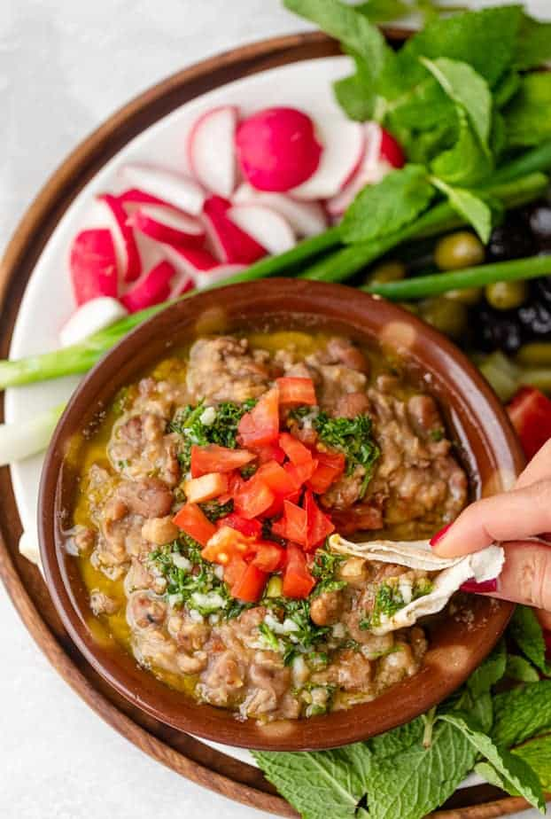

Fool Madamas

Prepared Ful Dish
Ful, is a stew of cooked fava beans served with olive oil,
cumin, and optionally with chopped parsley, garlic, onion,
lemon juice, chili pepper, and other vegetable, herb, and spice
ingredients.
Ful medames is traditionally made in and served out of a large metal jug.
It is a very popular breakfast dish and dish in general across the middle east and
Africa.
Ingredients
- Fava Beans
- Olive oil
- Garlic
- Lemon
- Salt
- Pepper
- Cumin
- Parsley
- Chili pepper
- Tomatoes
Steps
- Place Fave Beans in a pot and bring them to a boil.
- Add in the lemon, garlic, salt, pepper, cumin and chilli pepper and mix thoroughly.
- Place into serving pot and add the parsley, and diced tomatoes on top, finally pouring a generous amount of olive oil.
- Serve Hot and enjoy!